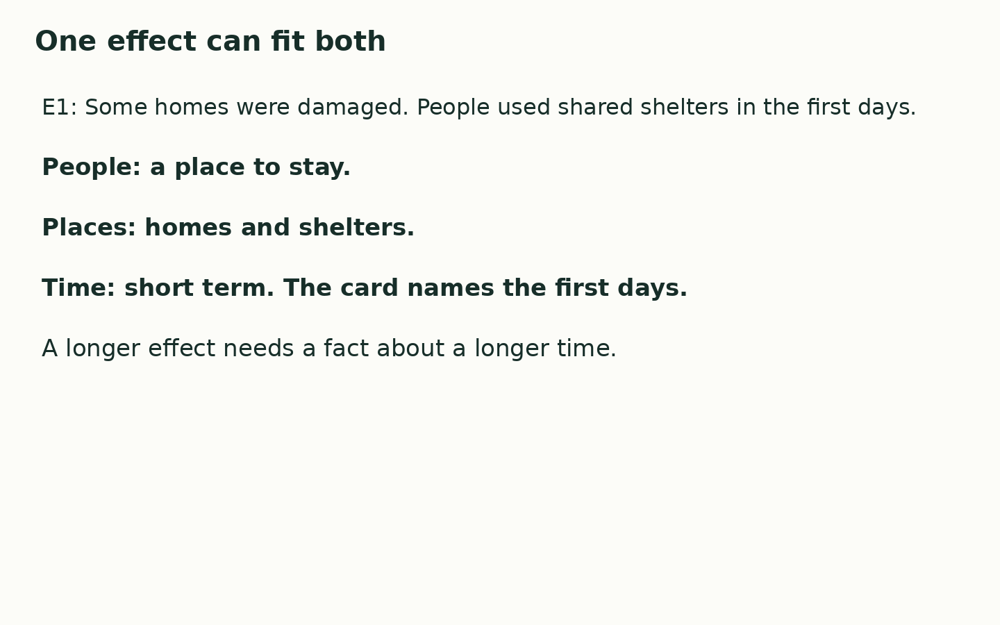

Friday 5 March 2027 | P2 | 40 minutes | Year A
Humanities · GROW · Spring 2 Week 2 · HUM-GROW-S2-W02
Learning outcome: Describe how a natural hazard affects people and places.
On 11 March 2011, a strong earthquake happened under the sea near Japan. Part of the sea floor moved. This helped cause a tsunami, a set of large waves. The waves reached the coast of the Tohoku region. This lesson looks at some effects and the work to recover. People and places were not all affected in the same way.

An effect is a change caused by an event.
People need homes, travel, water and power. These needs link people and places.
Short term means the first hours and days here. Long term means months and years here.
One effect can concern both people and places. It can last for more than one time span.
Where this leads: People who plan places and transport use evidence about hazard effects to help recovery.